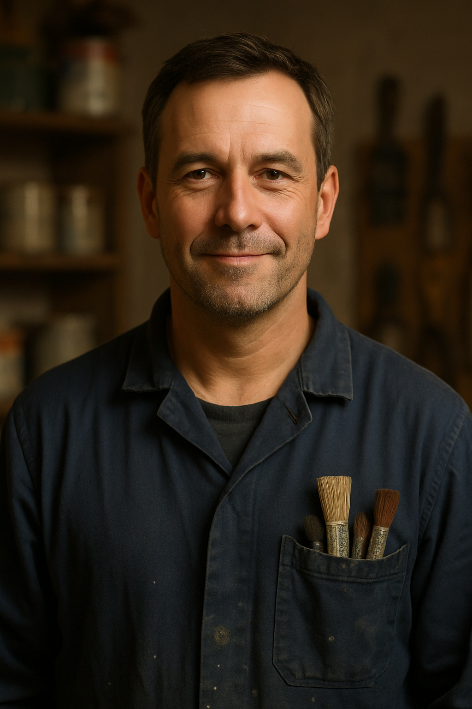
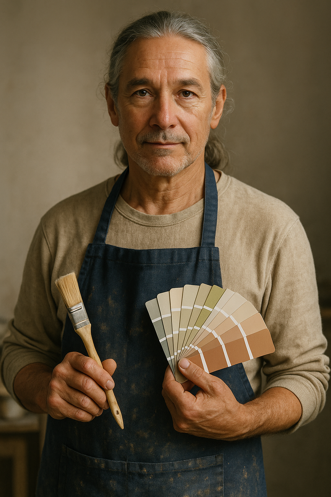

Unser Team
Passionierte Maler für nachhaltige Lösungen

Thomas Steiner
Geschäftsführer & Malermeister
Thomas führt den Malerbetrieb mit Fokus auf Nachhaltigkeit und Umweltschutz. Über 20 Jahre Erfahrung im ökologischen Bauen.

Lisa Weber
Umwelt-Farbberaterin
Lisa berät zu ökologischen Farben und nachhaltigen Beschichtungen. Sie entwickelt umweltfreundliche Farbkonzepte.

Max Brunner
Ökobau-Spezialist
Max ist Experte für energieeffiziente Gebäudehüllen und nachhaltige Sanierungsmethoden im Malerbereich.